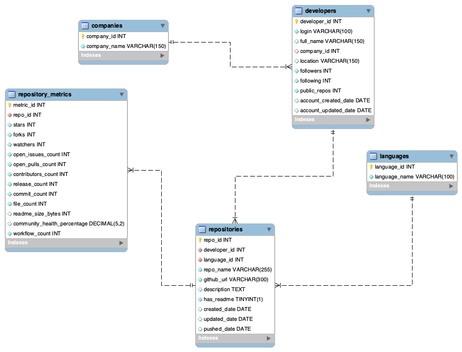

Repository visibility
The project evaluates how stars and forks are distributed across repositories and whether a small number of projects dominate attention.
Open-Source Repository Research
This project studies repository visibility, lifecycle, documentation, and community health using public GitHub metadata. The site brings together the research question, data scope, analytical views, schema design, and final SQL and BI outputs.
Overview
The project evaluates how stars and forks are distributed across repositories and whether a small number of projects dominate attention.
It studies active lifespan, commit activity, and repository longevity to understand how maintenance patterns vary.
It compares README coverage and community health metrics to see how well repositories are documented and structured.
Research Questions
Are stars and forks spread broadly across repositories, or concentrated in a small set of highly visible projects and owners?
Do most repositories remain early stage, or do they show sustained activity and stronger signs of long-term maintenance?
Does README coverage remain high even among lower-impact repositories, and how does that compare with community health measures?
Data
The main analysis uses the full repository metadata file with 14,644 repositories, which provides stars, forks, commits, README status, and lifecycle fields.
A separate GitHub users dataset supports the relational schema and helps illustrate joins, normalization, and cross-source entity matching.
Only about 200 repositories match across the two sources, so the public-facing analysis emphasizes repository-level patterns instead of full profile-level integration.
Analysis
All charts in this section are driven by the cleaned full repository metadata source.
Use the star, fork, impact, and language views to see whether repository attention is broad or highly concentrated.
The lifecycle curve, active-days rankings, and commit summaries help compare early-stage repositories with longer-lived projects.
README coverage and community health views show whether documentation quality stays strong even when visibility is uneven.
Impact levels follow the SQL view logic from the project: High Impact means at least 10 stars, Medium Impact means 3 to 9 stars, Low Impact means 1 to 2 stars, and Early Stage means 0 stars.
Each point represents one repository in the filtered view. The x-axis uses log-scaled forks, the y-axis uses log-scaled stars, point size reflects commit volume, and point color follows the impact-level classification.
This curve shows the cumulative share of repositories that reach each active-days band, from 0 to 30 days through 3 or more years. It summarizes how quickly repository activity falls off over time.
Each tile stands for one repository, up to 120 repositories in the current filtered view. Darker tiles indicate higher community-health scores, while lighter tiles indicate missing or weak health signals.
| Repository | Owner | Language | Impact | Stars | Forks | Commits | Active Days |
|---|
Data Model

The schema includes developers, repositories, repository metrics, languages, and companies.
The relational design separates profile information, repository metadata, and performance metrics so that queries can isolate ownership, repository activity, and language signals more clearly.
The repository metadata file has much wider coverage than the separate GitHub users file. That mismatch is why the live analysis relies on the full repository source.
Findings
A small number of organization-backed repositories drive most of the stars and forks in the sample.
Most repositories in the curated dataset use Python, which also highlights the need for future language expansion.
The impact tier breakdown shows a long tail of repositories with low visibility and only a few standout projects.
README coverage is strong in the repository source, which helps explain why many projects still look documented even when their engagement is low.
Methodology
Query 1 uses DENSE_RANK() over stars and forks to rank repositories by visibility across owners and languages.
Query 2 uses DATEDIFF() to measure the number of days between repository creation and last push.
Query 3 uses CASE WHEN logic to classify repositories into impact tiers using star thresholds.
Query 4 uses COUNT, SUM, and AVG with GROUP BY to compare owners by total repositories, stars, forks, and average commits.
Query 5 uses two CTEs and a CROSS JOIN to identify developers whose repository counts exceed the sample mean.
Queries 6 and 7 use a five-table join and a reusable SQL view to precompute active_days and impact_level for downstream analysis.
Deliverables
Add your published Power BI URL in app.js and this section
will turn into a live link.